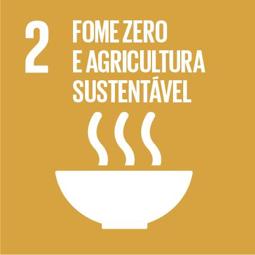

Garantir segurança alimentar e promover a agricultura sustentável.
A ODS 2 (Objetivo de Desenvolvimento Sustentável 2) tem como objetivo acabar com a fome, alcançar a segurança alimentar, melhorar a nutrição e promover a agricultura sustentável. Ela busca garantir que todas as pessoas tenham acesso a alimentos nutritivos e suficientes, ao mesmo tempo em que promove práticas agrícolas que respeitem o meio ambiente e melhorem a vida dos pequenos produtores rurais.
A ODS 2 enfrenta desafios como as mudanças climáticas, que afetam a produção de alimentos, e a desigualdade no acesso à alimentação. Conflitos e crises humanitárias também comprometem a segurança alimentar em diversas regiões. Além disso, o desperdício de alimentos e práticas agrícolas insustentáveis prejudicam o meio ambiente e dificultam o combate à fome de forma duradoura.